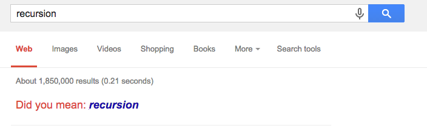
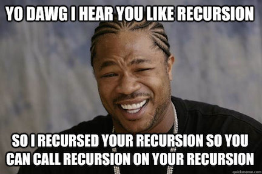
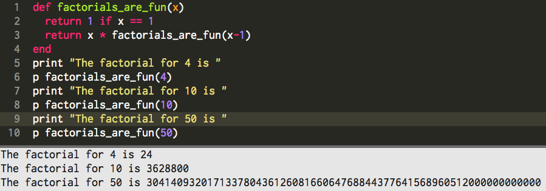

T8: Did you mean recursion?
Earlier this year, I googled recursion. This is what resulted:
I totally didn’t get it, and if you didn’t either than this blog post is for you. Chances are you've seen or used recursion without even realizing it. There used to be a restaurant near my house when I was growing up, and we would often get takeout from there. The restaurant was shaped like a square, and two of the parallel walls were panelled with mirrors. I remember staring at myself staring at myself staring at myself, which for the record, is a great way to keep a kid entertained. That’s essentially a real world example of recursion.
Recursion is used to solve something by calling itself. It’s somewhat similar to a loop, except that instead of continuing a certain number of times, it will continue until a condition has been met. But when would we use recursion? We might use it to find the next number in fibonacci’s sequence or to countdown.
Not going to lie, saw an Xzibit meme on someone's blog
weeks ago and have been waiting to use one too.
The important thing with recursive programming is that unless an end point (or base case) is specified, it will run forever, and will crash your program or browser. So it’s crucial to make sure that is specified. Since ruby doesn’t have an easy way to do factorials, such as (n!), I’ll make one for example.
The way this works is that it takes a number as an argument. Then it goes “hey Bro, are you equal to 1? Nah? Okay, let’s multiply you by one less of yourself. Bro, you equal to 1? Nah? Okay, lets...” on and on until it determines that the number is equal to one, as one is our specified break point. Once the number is equal to once, it terminates.